PARTIEL · Mission complète non acceptée
499/499 artefacts; 265 centres communaux. Ces nombres ne sont pas une validation de rendu ou d’art départemental.
Rapport final unique · Matrice machine A01–A56 · Reproduction
Galerie autonome : fichiers locaux, sans application externe ni CDN. Les captures initiales d’Angles gardent leur message de paysage indisponible. Plans, fixtures synthétiques, inspections et voyages historiques gardent leur type de preuve. Aucune fluidité GPU ou Android physique n’est revendiquée.
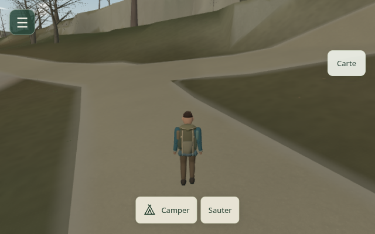
46700e93a13557e67b37c2b3b0d596c5566c6c1f94513a5214ebce493d8af365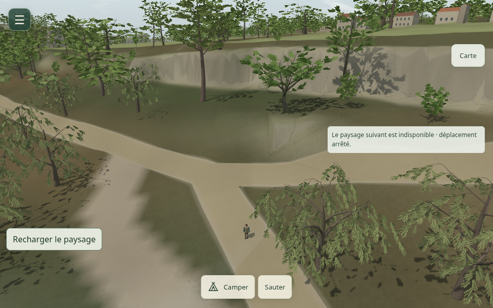
b1e71f4af604b29e97f1c71f1119bc64913ce09f62c4b7321be8d1fd2916b299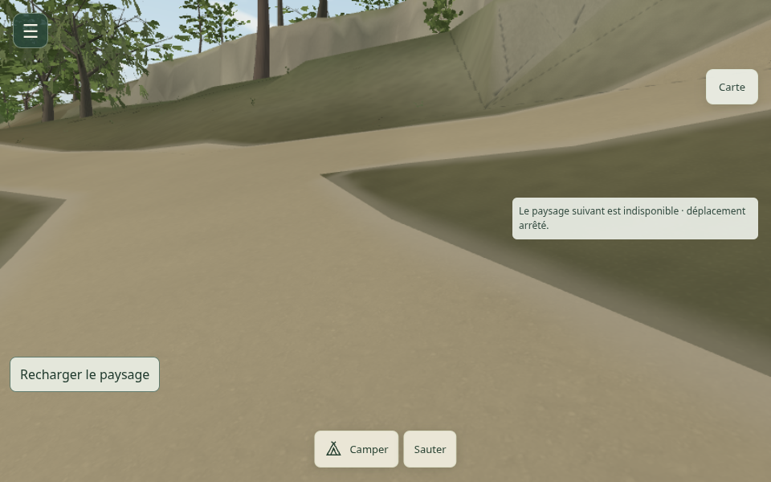
b2998bda60451ff337caa8a555a058e3b5989cc9459d2f34d3424f4107e04e59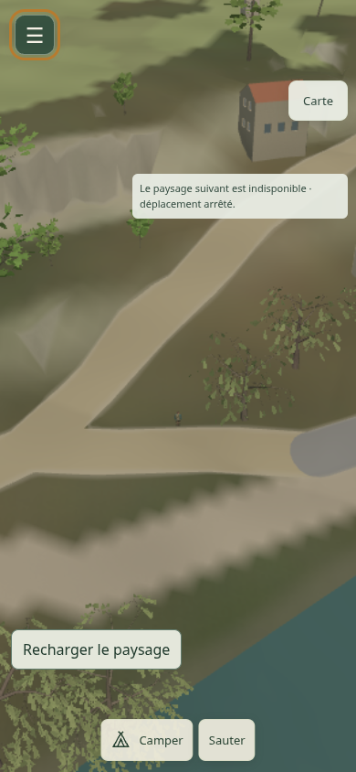
4066b2e28836fc217d8c2de8ec78b456dfb6ab391699192da2175a698ea0ae2d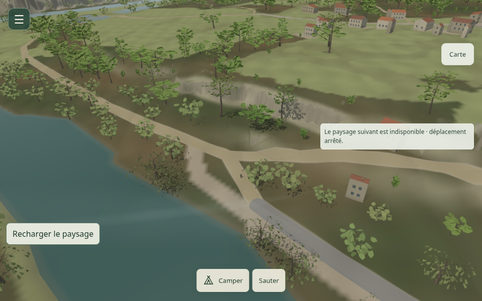
981016fd72b73053eab593855367187a0aee38ed091c2de84639b0b0b65c37c1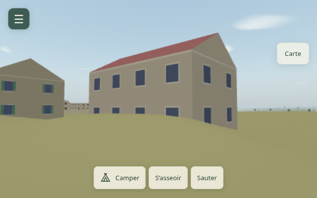
9ae92d07a927a95ac61c7eb1fd4075f0a551ddac1a38ef5c887aa5a2c9a0e414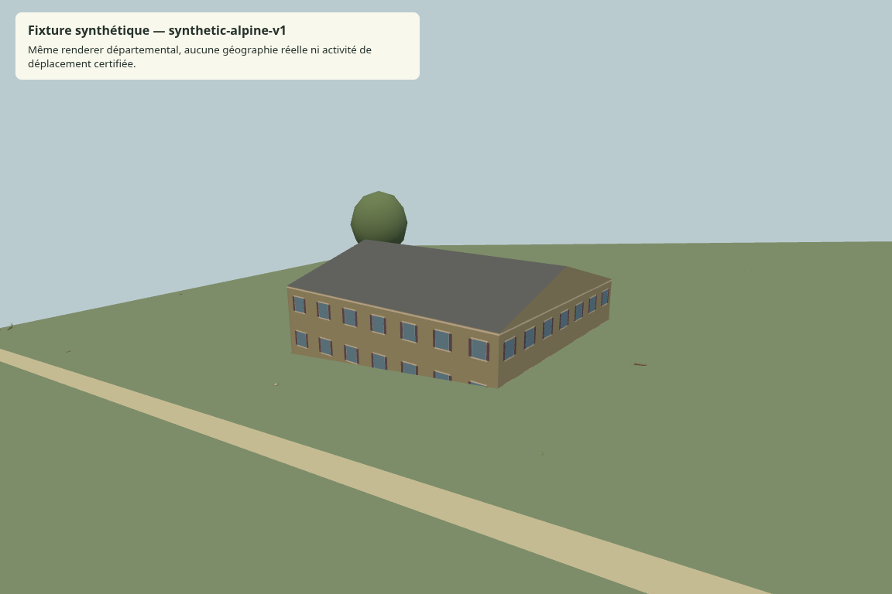
847bafc0c9f116fa99d22915b151041901cf176fb82d8e48b20c8d782994d715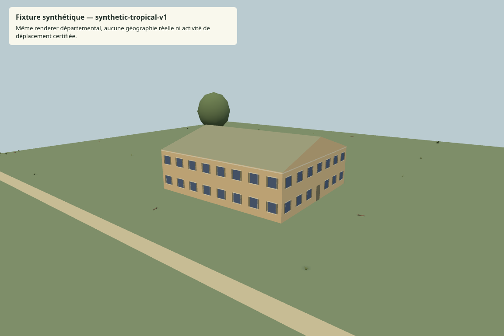
ad9a0b648ce052895c2e4b20ecfaad1c85955891398356f7d2510386628630da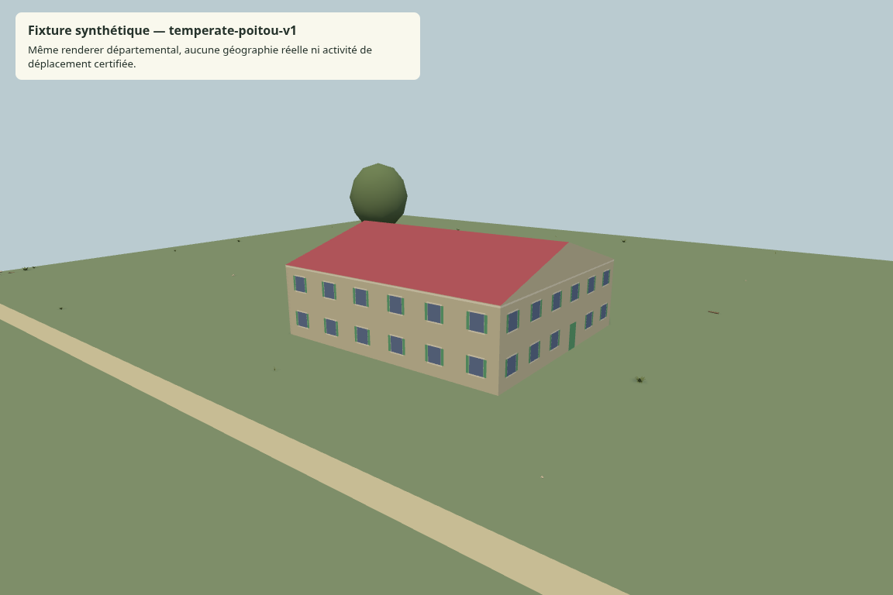
5dd5fa80b8002896d065608b2f2e222583227a791eca1f44e4d99b65c271babd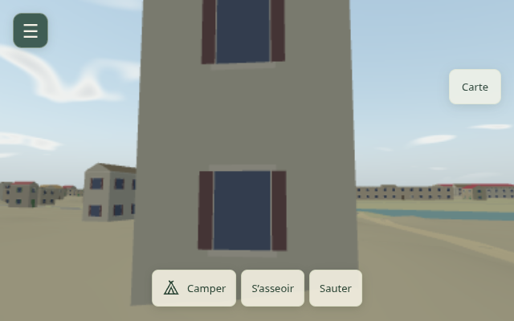
2e00f76c9e447c6eefdf8d897850f8c8a2de9eb8acb61e34f801ddf3fd43e62f207491de8a006bb3c711e0de9a390b1502ce2677d7db4db61c469388d8d6e7aa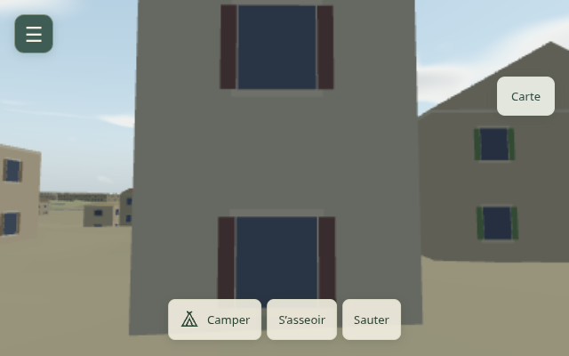
6fdbc98c2853b44d7c8ca6ea03c637f8821ae0ac4c8fb7ddc9b7c9016aeca276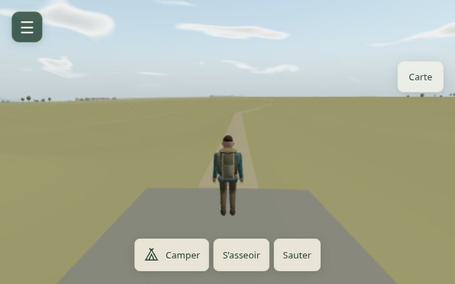
PROTOCOLE PRÉMATURÉ : exclu de la validation artistique. Voir browser-premature-readiness.json.
738457c107eb8d61c9f41d35ad257c319efaca062e07d9931baa2ab211a2d753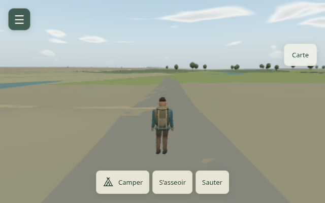
PROTOCOLE PRÉMATURÉ : exclu de la validation artistique. Voir browser-premature-readiness.json.
9043cac36d118951ab8006470d3ca3ef8165cf6328bfef52950ab1cfd0691c05PROTOCOLE PRÉMATURÉ : exclu de la validation artistique. Voir browser-premature-readiness.json.
d23c5350896dc003b0f9d56863c418cd91dee6a91dff48b60f40d4f986a28e8b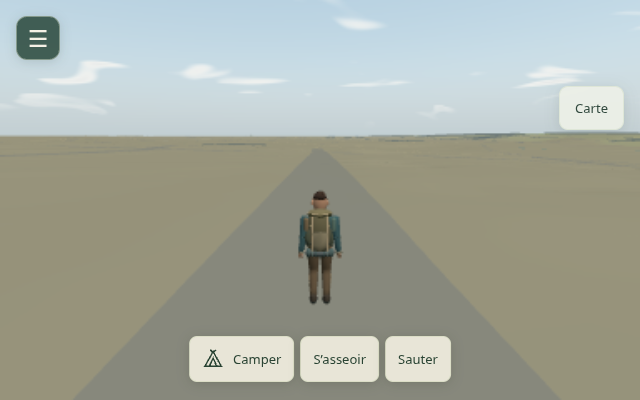
PROTOCOLE PRÉMATURÉ : exclu de la validation artistique. Voir browser-premature-readiness.json.
4d1c6e197c9123dc791d935836570133de6263406e8a838b6fd525a36d5f3eb1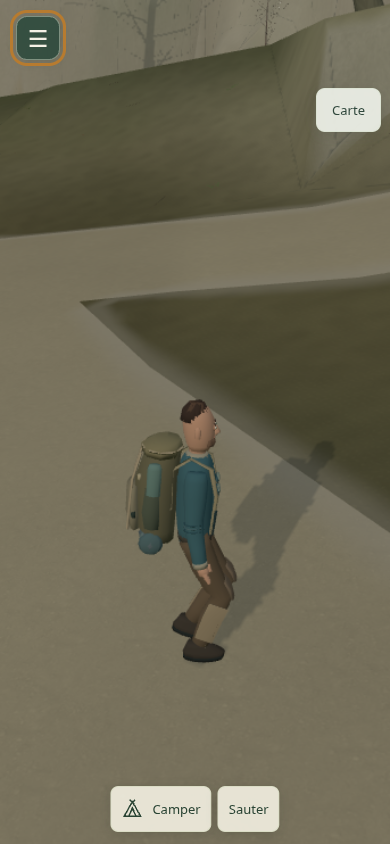
c0be913be1bbfcad8959d641a85acf3f59cbd150e924d6ad473abb1b7d9eb352d1524af2ddbed8f55dd97c20a03656ee580c0d53b0fd53336eee21055c1b78ae8462bdcd2a9f6b80363b164a8899a08dbebf53fd5438aa4006b18877ac8824b6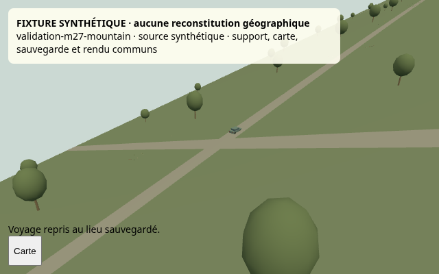
587b4aa9a951e24ca82dae80bfe63171dc7b7352572a980dbb877d9e9b95a8e3886f691069068bc24a9b9bb9412b42262da8eb08ad5075e26bda2115b3031b01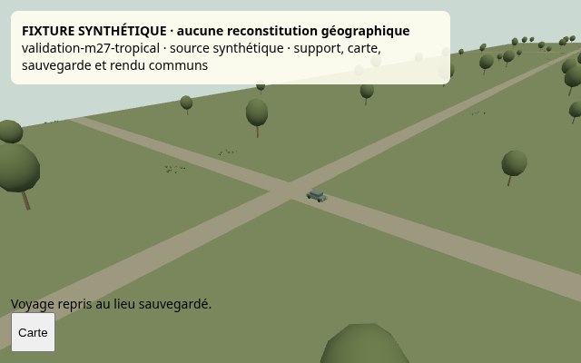
fbbe4ea088d91da60ab59a03e813cad7ebaba79ba6bcec0accb0a8e2381efb83d546affca8c647c687a231d9d916bb8c34617b8109841fe66f9834bea008f83c| ID | Exigence | État | Limite |
|---|---|---|---|
| A01 | Conservation et ascendance vérifiées | PARTIEL | Base M26.4 et inventaire conservés; lire les reçus Git/préservation finaux. Les voyages historiques ne sont pas recertifiés par les tests unitaires. |
| A02 | Sources, dates, licences et couverture | PARTIEL | Corpus acquis et documentation auditables; frontières ZICAD et couverture locale de tous les nouveaux produits non acquises. |
| A03 | LiDAR fin et fallback honnête | PARTIEL | 499 packs 2 m historiques conservés; aucune nouvelle couverture départementale 50 cm acquise ou rendue. |
| A04 | Architecture universelle cohérente | PARTIEL | Générateurs et packs paramétrables; le jeu complet reste attaché au point d’entrée historique du pilote. |
| A05 | Pipeline déterministe | ATTEINT | Deux générations identiques par tuile attestées; portée: artefacts et identités, sans conclusion perceptive. |
| A06 | 499 tuiles enrichies | PARTIEL | 499/499 artefacts générés; contenu présent et rendu observé restent des dimensions séparées. Pas de validation artistique exhaustive. |
| A07 | 265 communes représentées | PARTIEL | 265/265 centres couverts par un artefact; ce n’est pas une couverture artistique de chaque polygone communal. |
| A08 | Richesse perçue homogène | NON_ATTEINT | Équivalence à Angles non démontrée; baseline initiale limitée, comparaison stratifiée native encore ouverte. |
| A09 | Absence de zones pauvres injustifiées | PARTIEL | Audit hors ligne des habitats, exclusions et détails; les zones sans habitat ou sans détail ne sont pas closes par une revue départementale. |
| A10 | Sols et micro-relief détaillés | PARTIEL | Petits détails visuels ancrés sur support existant; pas de nouvelle microtopographie ni campagne complète sols/pentes/saisons. |
| A11 | Forêts, lisières et sous-bois | PARTIEL | Nouvelle couche de petites familles; les arbres départementaux simples et la forêt articulée du pilote restent différents. |
| A12 | Prairies, haies, champs et bocage | PARTIEL | Placement contextuel borné; saisons, cultures, haies et quatre milieux non validés nativement dans leur ensemble. |
| A13 | Bâtiments courants finis | PARTIEL | Plans de façades, ouvertures opaques et toits pris en charge; replis et formes complexes subsistent. Plans générés et volumes réellement rendus restent séparés. |
| A14 | Styles urbains contextualisés | PARTIEL | Pack régional et usages courants; pas de revue démontrant les identités urbaines distinctes de toutes les stations. |
| A15 | Monuments et repères | PARTIEL | Monuments historiques préservés; replis génériques honnêtes, aucune nouvelle reproduction authentique départementale revendiquée. |
| A16 | Rivières détaillées et raccordées | PARTIEL | Eau et navigation historiques conservées; le shader aquatique, les berges et champs source du pilote ne sont pas intégralement étendus. |
| A17 | Ponts et géométrie | PARTIEL | Aucun nouvel accès ni hauteur libre inventée; campagne complète dessus/dessous et finitions départementales non démontrée. |
| A18 | Voirie fidèle et détaillée | PARTIEL | Sources et supports historiques conservés; pas de campagne visuelle route rurale/ville/nationale/autoroute complète. |
| A19 | Rails et aéroport | PARTIEL | Voies et transport hérités conservés; absence de rejeu natif exhaustif M27 des stations et infrastructures. |
| A20 | Détails de vie contextuels | PARTIEL | Petits végétaux, pierres et bois mort sélectionnés par habitat et exclusions; mobilier et vie locale généralisés non livrés. |
| A21 | Matériaux et textures | PARTIEL | Palettes et géométries originales, licences conservées; pas de nouvelle bibliothèque PBR départementale complète ni compression KTX2 revendiquée. |
| A22 | Lumière et ombres stables | PARTIEL | Mêmes horloges et vent/depth pour détails; l’absence de shimmer ou clignotement en mouvement n’est pas démontrée. |
| A23 | Animations cohérentes | PARTIEL | Branchement commun du vent et préservation des corrections M26.4; naturel et absence de reset à toutes frontières non certifiés. |
| A24 | Sons spatialisés continus | PARTIEL | Soundscape partagé; indices eau/obstacles/feuillage encore liés au pilote, aucune écoute départementale complète certifiée. |
| A25 | LOD terrain sans couture | PARTIEL | Propriétaire physique historique conservé; audit exhaustif des bords et long parcours M27 non rejoués. |
| A26 | LOD objets sans popping | NON_ATTEINT | Identité déterministe ne prouve pas absence de popping; silhouettes/casters et demi-tours natifs départementaux encore ouverts. |
| A27 | Préchargement à pied | PARTIEL | Planificateur historique conservé; nouveau long voyage M27 et embranchements non démontrés par les plans. |
| A28 | Préchargement voiture | PARTIEL | Streaming et voiture hérités; voyage M27 intercommunal avec sortie immédiate non recertifié. |
| A29 | Streaming rivière et packraft | PARTIEL | Corridors conservateurs hérités; nouveau parcours natif M27 eau/berges/ombres non démontré. |
| A30 | Incidents réseau sans vide ni téléportation | PARTIEL | Vérification, erreur et fallback de sidecar implémentés; campagne réseau complète en déplacement non démontrée. |
| A31 | Budget main thread | NON_ATTEINT | Aucune tâche streaming >50 ms et préparation ≤8 ms ne sont pas acquises; conserver les maxima réellement enregistrés. |
| A32 | FPS et énergie desktop/mobile | NON_VALIDÉ_SUR_MATÉRIEL | Pas de GPU physique ni téléphone réel certifié. SwiftShader et émulation tactile restent distincts des performances matérielles. |
| A33 | Mémoire longue session | NON_ATTEINT | Aucune session native finale de 30–60 minutes avec évictions et mesure CPU/GPU/audio complète certifiée. |
| A34 | Save, reload, rebase et LOD | PARTIEL | Mécanismes hérités et tests techniques; consulter les checks runtime réellement fournis, sans extrapolation à tous modes/objets. |
| A35 | Validation artistique départementale | PARTIEL | 22 stations et échantillon stratifié sélectionnés depuis sources; sélection ne signifie ni visite, ni revue complète. |
| A36 | Rapport honnête et conservation | PARTIEL | Rapport unique, preuves et écarts explicites; résultats finaux, intégrité et état de PR à vérifier dans leurs reçus. |
| A37 | Indépendance administrative | PARTIEL | Nouvelle génération paramétrable par manifeste; runtime principal encore configuré pour fr-86/Angles. |
| A38 | Géodésie mondiale robuste | PARTIEL | Provider numérique ECEF/ENU et cellules testés; pas de migration de la géodésie active, de la météo ni des supports entre repères du jeu. |
| A39 | Biomes et saisons mondiaux | PARTIEL | Packs de contenu distincts; climat, mousson, saisons et catalogues biologiques mondiaux complets non simulés par ces packs. |
| A40 | Packs régionaux | PARTIEL | Schémas et variations déclaratifs actifs pour la nouvelle couche; pas de remplacement universel des bibliothèques historiques. |
| A41 | Fournisseurs et provenance | PARTIEL | Provenance conservée et provider de coordonnées ajouté; aucune fusion mondiale de nouveaux fournisseurs terrain/vecteurs réellement intégrée. |
| A42 | Production et distribution incrémentales | PARTIEL | Dépendances et réutilisation d’artefacts locales; diffusion multi-pays et capacité mondiale non démontrées en production. |
| A43 | Test montagne | PARTIEL | Fixture explicitement synthétique sur même pipeline/runtime; elle ne prouve ni géographie réelle, ni audio/climat/activités complets. |
| A44 | Test hors Europe | PARTIEL | Fixture tropicale explicitement synthétique avec autre pack; aucune production géographique hors Europe ni parité sensorielle complète. |
| A45 | Audit de portabilité et échelle | PARTIEL | Dépendances et estimations documentées; limites d’intégration et de capacité terrestre encore ouvertes. |
| A46 | Inventaire de parité immersive | ATTEINT | Inventaire source des systèmes, dépendances et adaptations; sa présence ne valide pas les systèmes en mouvement sur toutes les tuiles. |
| A47 | Vent, arbres et sols vivants | PARTIEL | Champ de vent partagé et détails animables; forêt départementale et observation d’animation de toute la couverture encore insuffisantes. |
| A48 | Saisons, météo et éclairage | PARTIEL | Moteur partagé; matrice quatre saisons/jour-soir-nuit par milieu et exposition départementale non démontrées. |
| A49 | Eau, berges et effets | PARTIEL | Activités et contacts hérités conservés; parité aquatique visuelle départementale non livrée. |
| A50 | Faune et audio | PARTIEL | Contrôleurs communs, mais perchoirs, indices et catalogues gardent des dépendances au pilote; continuité native non certifiée. |
| A51 | Interactions et traces | PARTIEL | Supports admis réemployés; camp hors pilote refusé et sémantique d’interaction non généralisée. |
| A52 | Audit immersif 499 tuiles | PARTIEL | Inventaire de disponibilité produit pour les tuiles; pas d’observation équivalente de tous les systèmes ni de campagne perceptive exhaustive. |
| A53 | Référence Walk Simulator | PARTIEL | Marche reste la référence de conception; séquence native immersive complète encore à juger. |
| A54 | Voyage multimodal continu | PARTIEL | Modes opérationnels hérités préservés; voyage M27 marche/voiture/bateau continu non démontré. Aucun train nouveau revendiqué. |
| A55 | Continuité sensorielle intermodale | PARTIEL | Horloge et identités partagées; preuve native soleil/vent/audio/objets sur transitions multimodales encore ouverte. |
| A56 | Qualité poétique et naturelle | NON_ATTEINT | Grille humaine fournie dans direction artistique; aucune note ou validation perceptive fabriquée depuis plans ou captures fixes. |
La grille de composition, variété, mouvement, son, continuité et envie d’explorer est dans la direction artistique. A56 reste non validé sur séquence immersive native.
Version exécutée déclarée : 7845dcb8bbecbe4a5e57ebb13256559d622eb08d. Tête d’assemblage : c78fbf9bbc464161956de099b4b0fd1af59b3014. Aucun merge ou déploiement par cet outil.